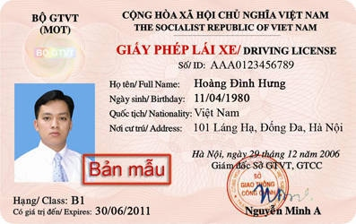

Khóa đào tạo lái xe bằng B2
Bằng lái xe ô tô hạng B2 chủ yếu dành cho các loại xe thông dụng dưới 9 chỗ ngồi. Xe phải đảm bảo thiết kế hoàn thiện và đảm bảo trọng tải dưới 3500kg. Trong đó đa số người dùng thường sử dụng xe từ 4 chỗ, 5 chỗ cho đến 7 chỗ là phần lớn. Đây là những dòng xe được dùng cho cá nhân, gia đình và có độ lưu thông khá lớn hiện nay.
Học lái xe ô tô B2 là nhu cầu trở nên phổ biến hơn bao giờ hết, bằng lái xe hạng B là loại giấy phép lái xe được sử dụng nhiều nhất với các tài xế vì tính tiện lợi, có thể lái được hầu hết các loại xe chở người thông dụng và xe tải loại nhỏ. Và việc học lái xe để có giấy phép lái xe loại này cũng không tốn quá nhiều thời gian. Thời gian học lái xe và thi sát hạch bằng lái chỉ mất khoảng 3 tháng.

Bạn nên học lái xe B2 vì khi đó bạn sẽ nắm vững kỹ thuật và rất dễ dàng làm chủ tay lái khi chuyển sang lái xe số tự động. Ngoài ra nếu bạn cần kinh doanh vận tải hoặc sau này muốn nâng bằng lên hạng C - D - E thì bạn phải học số sàn nhé.
Thông thường bất kỳ ai đủ điều kiện học lái xe có thể tham gia thi lấy bằng lái xe B2. Trước khi thi, các bạn sẽ được giáo viên hướng dẫn học lý thuyết bằng lái xe B2 và các bài tập thực hành. Sau khi đậu các học viên sẽ được nhận bằng và được sử dụng trong vòng khoảng 10 năm. Sau đó, các bạn có thể được gia hạn bằng mà không cần phải tiến hành thi lại.
CÁC LƯU Ý KHI HỌC BẰNG LÁI XE B2
Nhìn chung cách học bằng lái xe B2 không quá khó như các bạn thường nghĩ. Chỉ cần bạn ghi nhớ cho mình một số mẹo kèm theo và chăm chỉ học tập là được. Tuy nhiên để đảm bảo hiệu quả phát huy một cách triệt để bạn nên nắm rõ hướng dẫn học lái xe bằng B2. Cụ thể những hướng dẫn học lái xe ô tô hạng B2 cơ bản đã được phân tích như sau, bạn hãy cùng tham khảo cho mình nhé:
Theo một số sách hướng dẫn lái xe ô tô B2 thì tốc độ xuất phát là điều rất quan trọng. Bởi vì ngay khi vừa học lái việc xác định chính xác tốc độ để hạn chế va chạm là rất khó. Vì thế bạn cần chú ý chi tiết về vấn đề này. Tốt nhất khi học lái bạn hãy nhớ điều khiển xe chậm rãi với vận tốc vừa phải để đảm bảo an toàn. Tuyệt đối bạn không được tăng ga quá nhanh hoặc giảm tốc độ đột ngột khi đang di chuyển. Điều này sẽ làm cho các xe phía sau khó xử lý tình huống và dễ đâm vào đuôi nhau.
Thời hạn của bằng lái B2 là bao lâu?
Theo quy định mới của bằng lái B2 thì thời hạn của bằng sẽ bằng tuổi nghỉ hưu của người được cấp. Cụ thể đối với nam thì giá trị bằng đến tuổi 60 còn đối với nữ thì 55 tuổi.
Trường hợp nữ trên 45 và nam trên 50 thì giấy phép lái xe được cấp có thời hạn 10 năm kể từ ngày cấp.
Thông tin khoá học
Tên khóa học: {{data?.cou_name}}
Học phí: {{ data?.cou_fee | number }}vnđ
Thời gian đào tạo: {{data?.cou_training}}
Số tiết học: 3 buổi/tuần
Hình thức: Lý thuyết + thực hành(hướng dẫn trực tiếp)